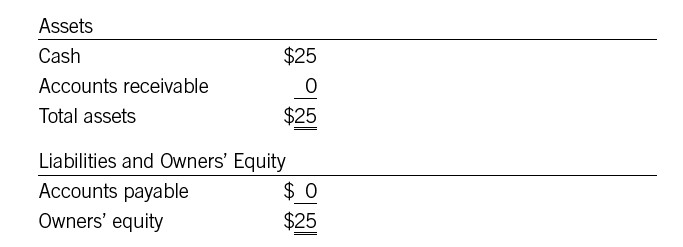
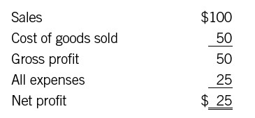
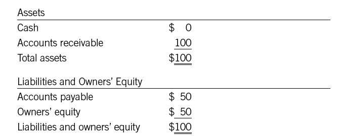

The Income Statement Affects the Balance Sheet
So far we have been considering the balance sheet by itself. But here’s one of the best-kept secrets in the world of financial statements: a change in one statement nearly always has an impact on the other statements. So when you’re managing the income statement, you’re also having an effect on the balance sheet.
PROFITS AND EQUITY
To see the relationship between profit, from the income statement, and equity, which appears on the balance sheet, we’ll look at a couple of examples. Here’s a highly simplified balance sheet for a brand-new (and very small!) company:

Say we operate this company for a month. We buy $50 worth of parts and materials, which we use to produce and sell $100 worth of finished product. We also incur $25 in other expenses. The income statement for the month looks like this:

Now: what has changed on the balance sheet?
• First, we have spent all our cash to cover expenses.
• Second, we have $100 in receivables from our customers.
• Third, we have incurred $50 in obligations to our suppliers.
Thus the balance sheet at the end of the month looks like this:

As you can see, that $25 of net income becomes $25 of owners’ equity. On a more detailed balance sheet, it would appear under owners’ equity as retained earnings. That’s true in any business: net profit adds to equity unless it is paid out in dividends. By the same token, a net loss decreases equity. If a business loses money every month, liabilities will eventually exceed assets, creating negative equity. Then it is a candidate for bankruptcy court.
Note something else about this simple example: the company wound up that month with no cash! It was making money, and equity was growing, but it had nothing in the bank. So a good manager needs to be aware of how both cash and profits interact on the balance sheet. This is a topic we’ll return to in part 4, when we take up the cash flow statement.
AND MANY OTHER EFFECTS
The relationship between profits and equity isn’t the only link between changes in the income statement and changes on the balance sheet. Far from it. Every sale recorded on the income statement generates an increase either in cash (if it’s a cash sale) or in receivables. Every payroll dollar recorded under COGS or under operating expenses represents a dollar less on the cash line or a dollar more on the accrued expenses line of the balance sheet. A purchase of materials adds to accounts payable, and so on. And of course, all these changes have an effect on total assets or liabilities.
Overall, if a manager’s job is to boost profitability, he or she can have a positive effect on the balance sheet, just because profits increase equity. But it isn’t quite so simple, because it matters how the company earns those profits, and it matters what happens to the other assets and liabilities on the balance sheet itself. For example:
• A plant manager hears of a good deal on an important raw material and asks the purchasing department to buy a lot of it. Makes sense, right? Not necessarily. The inventory line on the balance sheet increases. The accounts payable line increases a corresponding amount. Eventually, the company will have to draw down its cash to cover the accounts payable—possibly long before the material is used to generate revenue. Meanwhile, the company has to pay for warehousing the inventory, and it may need to borrow money to cover the decrease in cash. Figuring out whether to take advantage of the deal requires detailed analysis; be sure to consider all of the financial issues when making such decisions.
• A sales manager is looking to boost revenue and profit, and decides to target smaller businesses as customers. Is it a good idea? Maybe not. Smaller customers may not be as good credit risks as larger ones. Accounts receivable may rise disproportionately because the customers are slower to pay. The accountants may need to increase that “bad debt” allowance, which reduces profit, assets, and thus equity. The financially intelligent sales manager will need to investigate pricing possibilities: can he increase gross margin to compensate for the increased risk on sales to smaller customers?
• An IT manager makes a decision to buy a new computer system, believing that the new system will boost productivity and therefore contribute to profitability. But how is the new equipment going to be paid for? If a company is overleveraged—that is, if it has a heavy debt load compared with its equity—borrowing the money to pay for the system may not be a good idea. Perhaps it will need to issue new stock and therefore increase its equity investment. Making decisions about how to get the capital required to run a business is the job of the chief financial officer and the treasurer, not the IT manager. But an understanding of the company’s cash and debt situation should inform the manager’s decision about when to buy the new equipment.
Any manager, in short, may want to step back now and then and look at the big picture. Consider not just the one line item on the income statement that you are focusing on, but the balance sheet as well (and the cash flow statement, which we’ll get to shortly). When you do, your thinking, your work, and your decisions will be “deeper”—that is, they will consider more factors, and you’ll be able to talk about their impact with greater nuance and understanding. Besides, imagine talking to your CFO about the impact of profit on equity: he’s likely to be impressed (even shocked).
ASSESSING A COMPANY’S HEALTH
Remember, we said at the beginning of this part that savvy investors typically pore over a company’s balance sheet first. The reason is that the balance sheet answers a lot of questions—questions like the following:
• Is the company solvent? That is, do its assets outweigh its liabilities, so that owners’ equity is a positive number?
• Can the company pay its bills? Here the important numbers are current assets, particularly cash, compared with current liabilities. More on this in part 5, on ratios.
• Has owners’ equity been growing over time? A comparison of balance sheets over a period of time will show whether the company has been moving in the right direction.
These are simple, basic questions, of course. But investors can learn much more from detailed examination of the balance sheet and its footnotes and from comparisons between the balance sheet and other statements. How important is goodwill to the company’s “total assets” line? What assumptions have been used to determine depreciation, and how important is that? (Remember Waste Management.) Is the cash line increasing over time—usually a good sign—or is it decreasing? If owners’ equity is rising, is that because the company has required an infusion of capital, or is it because the company has been making money?
The balance sheet, in short, helps to show whether a company is financially healthy. All the statements help you make that judgment, but the balance sheet—a company’s cumulative GPA—may be the most important of all.